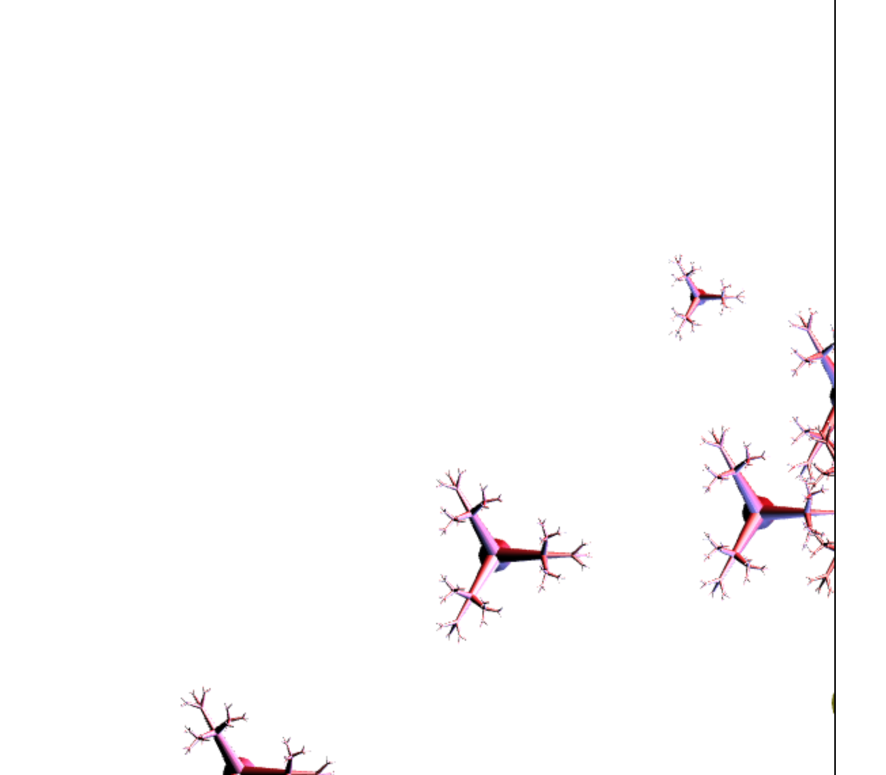
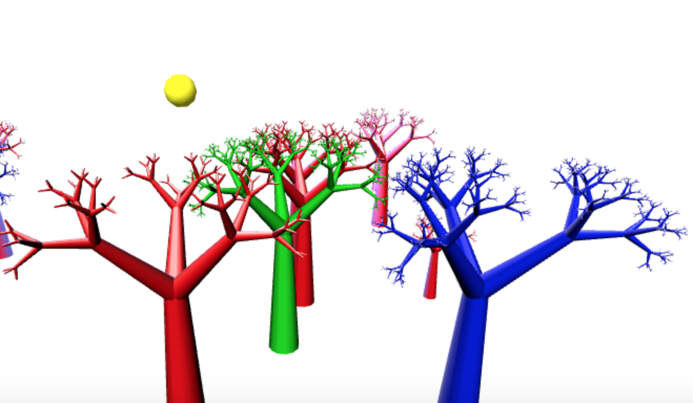
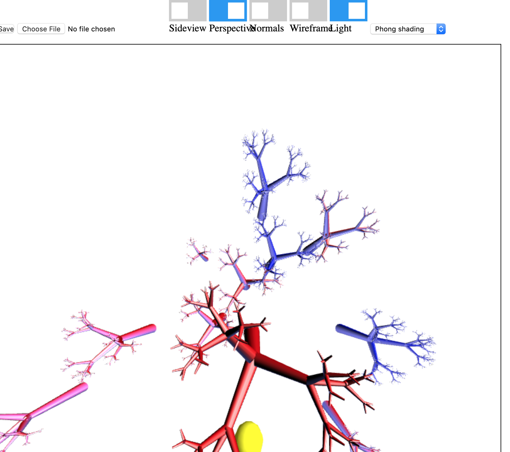
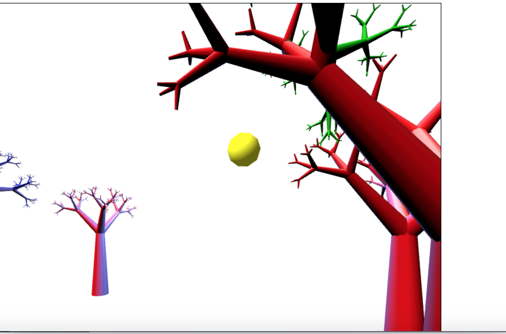

Xueran Ma Program4 Homework, student ID: 1779872
Date: Nov 25th
Click here to driver.html
Features guide:
1. Zoom in and out: In perspective projection, scroll the wheel without tree selcted will change the fov parameter inside setperspective function. This function is disable in Orthographic projection
2. Panning: No objects selected, and left clcik on the background and move left/right/up/down, the camera will move. I also modified the codes so that the trees are drawn in correct position even after camera is moved.
3. Move the camera in or out: Click with the middle button and then scroll the wheel, the camera will move in or out. In orthographic projection, the trees's shape won't change, but when it's close enough, the trees will disappear. In perspective projection, the shape of trees will change.
4. Look around: This function is not obvious in orthographic projection, so observe it in perspective view. Double click a tree, the camera look around that tree, and double click/select the tree and press key "e" on the background to quit that look around animation. Only do it for sideview.
5. Examine: This function works for both orthographic and perspective projection. Select a tree and then press e, the lookat point will go to that tree and camera will move around that tree in a circle. Double click/select the tree and press key "e" or on the background to quit this effect.
For additional features, I plan to add some texture mapping and dynamic flowers, glasses. And also add a character/player inside it and the user could control the player to move between the trees with keyboard, and will show 4 directional sides of the image.
Hope for early submmision scores! Thanks! And also it seems that I didn't get the phong smooth shading extra score in program3. Could you please help me to check? Appreciate it!
Panning

Examine

Zoom during perspective projection

Lookaround
